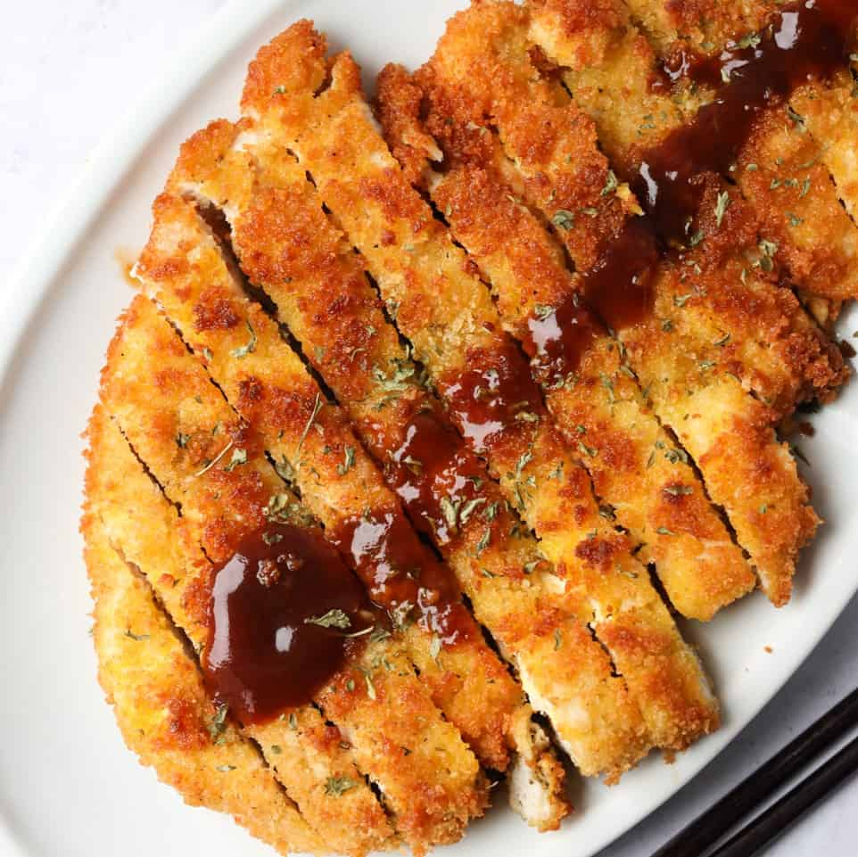

Chicken Tonkatsu

Description
A staple recipe from Japan, chicken katsu is a simple Japanese comfort food.
Katsu is a Japanese dish of crispy fried cutlets coated with Panko bread crumbs.
Popular varieties are chicken katsu (like this recipe) and tonkatsu (which is made with pork).
Ingredients
- 4 skinless, boneless chicken breast halves.
- 2 cups all-purpose flour
- 3 large eggs beaten
- 3 cups of panko bread crumbs
- Salt to taste
- Pepper to taste
- 3 cups canola oil
- Tonkatsu sauce
Steps
- Lightly pound the chicken thighs 1/2 inch thick and season with salt.
- Put the flour, eggs and panko in 3 separate pie plates and season each one lightly with salt.
- Dredge 1 piece of chicken in the flour, tapping off the excess.
- ADip in the egg, allowing the excess to drip off, then coat the chicken with the panko,
pressing to help it adhere
- Transfer the chicken to a wax paper–lined baking sheet, and repeat with the remaining chicken.
- Divide the oil between 2 large skillets and heat until shimmering.
- Add the chicken and fry over moderately high heat, turning once,
until golden and crispy, 3 minutes per side.
- Drain on paper towels. Serve the chicken with tonkatsu sauce, mustard and steamed rice.
- Add tonkatsu sauce as desired.
Credit to Roy Choion Food & Wine for the recipe